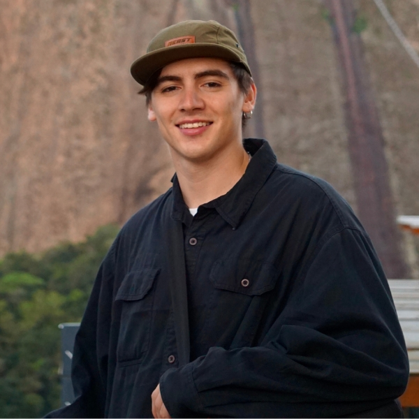

Design engineer
web
Soy ingeniero en Diseño chileno, Máster en Innovación y Diseño por la Universidad Adolfo Ibáñez y actualmente estudiante del Máster en Diseño y Desarrollo de Productos en Elisava, Barcelona.
Me apasiona transformar ideas en proyectos, productos y experiencias que generen un impacto en las personas. Me considero una persona analítica, creativa y curiosa, con un especial interés por explorar nuevas disciplinas y conectar conocimientos.
A lo largo de mi trayectoria he desarrollado proyectos propios y colaborado en sectores tan diversos como el ciclismo, la arquitectura, el arte interactivo y la industria minera. Entre ellos destacan la creación de Neast Components™, el desarrollo de experiencias que integran fabricación digital, tecnología e IoT, y el rediseño de una máquina de medición industrial para la startup chilena Konatec.
Actualmente soy Head of Brand & Product en Yuki Pet, una nueva marca chilena de experiencias y juguetes para mascotas. Creo en el potencial de conectar innovación, diseño, tecnología y emoción para crear soluciones que transformen nuestro entorno.
¡Creemos ese futuro juntos!

Head of brand and product
Yuki PetEmpresa de suscripción de juguetes y snacks para mascotas. Desarrollo, creación y ecosistema del producto y la marca.
Diseñador Freelance
Exhibición Cambridge & UAIDiseño y fabricación de proyecto exhibido en la universidad de Cambridge: "Investing architecture in the face of south america's vastness".
Diseñador Freelance
KonatecRediseño de máquina de medición reológica para minería Krheo 03. Elaboración conjunta a Centro de Interfaces Emergentes (CIE).
Asistente de Laboratorio diseño
FabLab UAI – Laboratorio de fabricación digitalAsesoramiento y mantención de máquinas: Imp. 3D, Router CNC, Cortadoras Laser, etc. Proyectos de diseño para mejoramiento de laboratorio.
Co-Fundador
Neast Components™Empresa dedicada a crear componentes de bicicletas de montaña. Nos motiva el impulsar a todos los ciclistas a llegar a su mejor nivel.
Práctica Ingeniería en Diseño
Centro de Interfaces Emergentes (CIE) & Centro de Cine y Creación (CCC)Diseño de exhibición de arte interactivo – FondArt 2022 MUTANTE [O el inacabado desarme del cuerpo].
Máster en Diseño y Desarrollo de Productos
ELISAVA, Facultad Diseño e Ingeniería UVic-UCC
Magíster en Innovación y Diseño – Mención de Honor
Universidad Adolfo Ibáñez
Licenciatura en Ingeniería en Diseño
Universidad Adolfo Ibáñez
Ingeniería civil plan común
Universidad Adolfo Ibáñez
Intercambio escolar de verano
Leibniz-gymnasium
Enseñanza escolar
Colegio Alemán de Puerto Varas